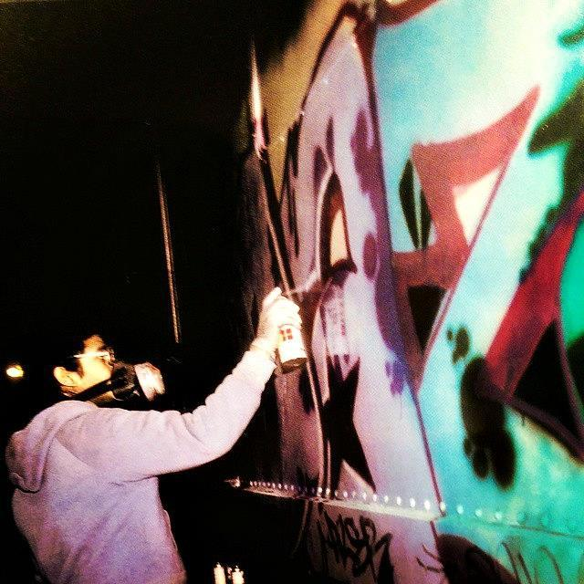
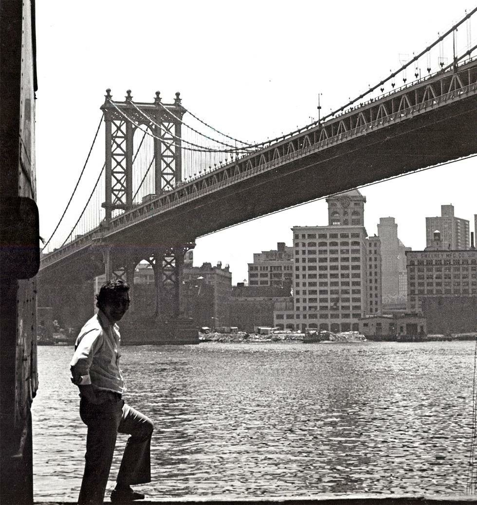
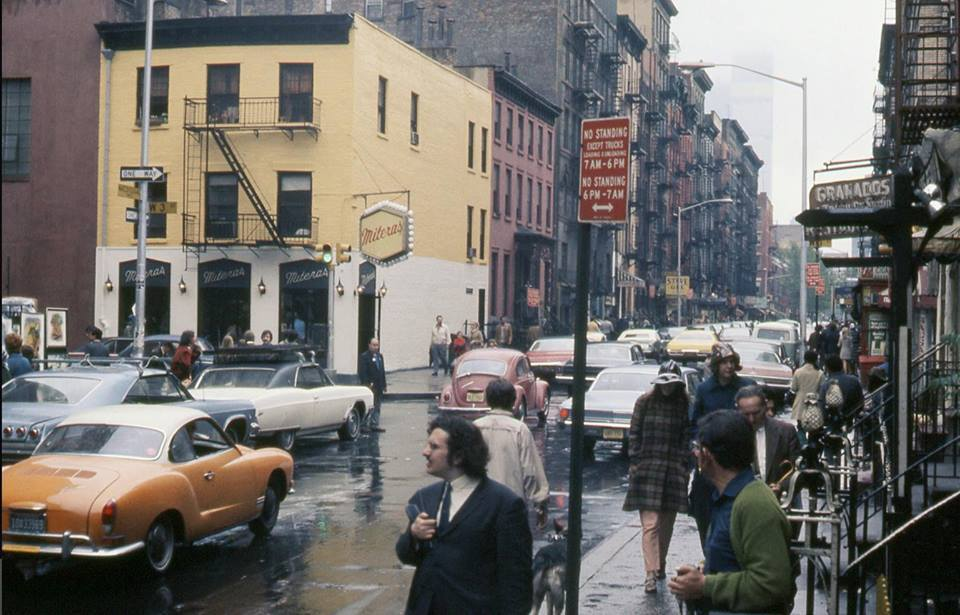

yale joel… fifth avenue, new york 1961 @ life
yale joel… fifth avenue, new york 1961 @ life
Breakin’ 1980

Yankee Stadium and elevated subway tracks; 1970s photo by unknown photographer.



Fur coats on 57th and Madison, 1982
Weegee Hanging Out in Washington Square Park, New York City 1956
“There is something in the the New York air that makes sleep useless.” Simone de Beauvior

Williamsburg, 1988

Rivington and Suffolk, 1980
Broadway and W49th Street, looking south, ca. 1984
Playing steel drums in Riverside park, 1981

High fashion in 1982. 57th and 5th Ave.
LaGuardia Place looking toward Bleecker Street, Manhattan. 1971 photo from the Peter Manzari collection.
125th Street, 1970

A father and son walk down 42nd Street, 1971. Photo by Bill Ray for LIFE
Times Square, 1973
Times Square, 1977

New York. Pace University, Park Row at the Brooklyn Bridge Ramp, 1975.
This is the building they tore down the New York Herald Building to build, and the ramp on the foreground partially takes the place of the old New York World Building. Two fine old buildings, lost to uninspired concrete.
Beautiful people in NYC, 1970

5th and 57th, 1982, looking downtown at [shudder] Trump Tower, under construction (finished in 1983).

A broadcast of The Honeymooners in 1955. It was a rare show about NYC that was actually filmed in NYC. (And a huge part of my childhood, watching episodes on WPIX.)
WTC ad from the New York Times, 1971

The hazards of parking on 109th Street

West 3rd in The Village, 1971
Abandoned car on 71st near Amsterdam Ave, 1984
Graffiti, 1973

The 33rd Street bridge that connected the Gimbels and Saks department stores in Manhattan; photo circa 1960 from the defunct actionlog Flickr account. Gimbels is now the somewhat less distinguished Manhattan Mall.
The topic of aerial pedestrian bridges has gotten some interesting coverage from the New York Times, the Bowery Boys (check out their podcasts too), Forgotten NY, and others. The Bowery Boys article is particularly interesting, focusing on the 32nd Street bridge that still exists. The 33rd Street bridge was dismantled in 1966.

Blondie

Louis Stettner Manhattan from the Brooklyn Promenade 1954
Checker cab outside the WTC, 1980

I know the couple here is the focal point, but I can’t stop looking at the shlubby dude on the right.
Riding the subway is fun.

Self-propelled catwalk car in action in the Lincoln Tunnel. It’s unclear exactly what’s going on here with that crowd of people standing in the right lane. This 1960 photo was taken by Ed Peters for the New York Daily News.
July 28, 1978: A water main break in Bushwick, Brooklyn, rendered Decatur Street “a scene of contrasts.” A 48-inch pipe had burst at about 4:25 a.m., sending millions of gallons into the street, “shot up through the asphalt like a geyser.” Children played while residents fretted about the damage — and the delayed response. “Bushwick is a forgotten place,” The Times quoted Anne Norris, “but we are damn good taxpayers here.”
Coming back from sunning in Central Park, 1981

Kenny’s Castaways and the Back Fence in 1983
Somewhere in the West 40s, 1979
New York. Cafe Veselka, 2nd Avenue at 9th Street, circa 1967.
The modern restaurant, way too fancy now for locals, started as a Ukranian only news stand and candy store with a few tables, slowly evolving a menu of Ukranian and classic American Cuisine
St Mark’s Place, 1978. Is that cop getting high?

West End Ave, 1960

Tokens, 30 cents

Ralph Bakshi taking a break from work on Fritz the Cat

17th and Broadway, 1982
NYC, 1989
On the subway, 1981
Saturday Night Fever (1977)

West 3rd Street in 1972